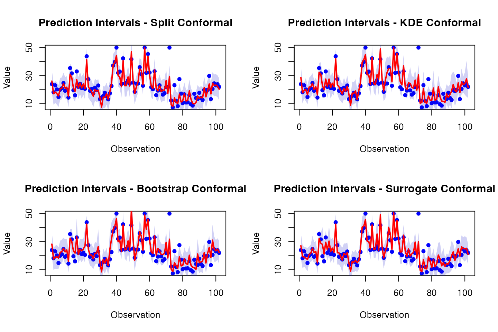
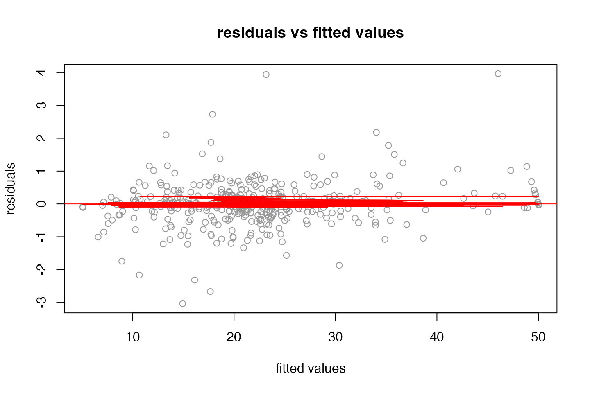

Getting started
getting-started.RmdInstall package
options(repos = c(
techtonique = "https://r-packages.techtonique.net",
CRAN = "https://cloud.r-project.org"
))
install.packages("matern32") Fitting a model
fit_obj <- matern32::fit_matern32(x = X[idx_train,], y = y[idx_train], lambda = 0.01)## Registered S3 method overwritten by 'matern32':
## method from
## predict.poly stats## [1] 2.680429Prediction intervals
fit_obj <- matern32::fit_matern32(x = X[idx_train,], y = y[idx_train], lambda = 0.01, method = "conformal")
preds_splitconformal <- predict(fit_obj, X[-idx_train,], level=95, method = "splitconformal")
preds_kdeconformal <- predict(fit_obj, X[-idx_train,], level=95, method = "kde")
preds_bootstrapconformal <- predict(fit_obj, X[-idx_train,], level=95, method = "bootstrap")## Registered S3 method overwritten by 'quantmod':
## method from
## as.zoo.data.frame zoo
preds_surrogateconformal <- predict(fit_obj, X[-idx_train,], level=95, method = "surrogate")
# coverage
(coverage_splitconformal <- mean((y[-idx_train] >= preds_splitconformal$lower) & (y[-idx_train] <= preds_splitconformal$upper)))## [1] 0.9705882
(coverage_kdeconformal <- mean((y[-idx_train] >= preds_kdeconformal$lower) & (y[-idx_train] <= preds_kdeconformal$upper)))## [1] 0.9803922
(coverage_bootstrapconformal <- mean((y[-idx_train] >= preds_bootstrapconformal$lower) & (y[-idx_train] <= preds_bootstrapconformal$upper)))## [1] 0.9509804
(coverage_surrogateconformal <- mean((y[-idx_train] >= preds_surrogateconformal$lower) & (y[-idx_train] <= preds_surrogateconformal$upper)))## [1] 0.9705882
# Extract predictions and true values
x_test <- 1:length(y[-idx_train])
y_test <- y[-idx_train]
# Define a helper function to plot prediction intervals
plot_intervals <- function(x, y, lower, upper, method_name) {
plot(x, y, type = "p", pch = 16, col = "blue", xlab = "Observation", ylab = "Value",
main = paste("Prediction Intervals -", method_name))
polygon(c(x, rev(x)), c(lower, rev(upper)), col = rgb(0.1, 0.1, 0.8, 0.2), border = NA)
predicted_mean <- (lower + upper) / 2
lines(x, predicted_mean, col = "red", lwd = 2)
}
par(mfrow = c(2, 2))
# Plot for Split Conformal
plot_intervals(x_test, y_test, preds_splitconformal$lower, preds_splitconformal$upper, "Split Conformal")
# Plot for KDE Conformal
plot_intervals(x_test, y_test, preds_kdeconformal$lower, preds_kdeconformal$upper, "KDE Conformal")
# Plot for Bootstrap Conformal
plot_intervals(x_test, y_test, preds_bootstrapconformal$lower, preds_bootstrapconformal$upper, "Bootstrap Conformal")
# Plot for Surrogate Conformal
plot_intervals(x_test, y_test, preds_surrogateconformal$lower, preds_surrogateconformal$upper, "Surrogate Conformal")
Summary of the fit object
set.seed(123)
idx_train <- sample.int(dim(X)[1], size=floor(0.8*dim(X)[1]))
fit_obj <- matern32::fit_matern32(x = X[idx_train,], y = y[idx_train], lambda = 10**seq(-10, 10, by=1))
summary_fit_obj <- summary(fit_obj)## Response:
## Min. 1st Qu. Median 3rd Qu. Max.
## 5.000 17.075 21.200 25.000 50.000
##
## Residuals:
## Min. 1st Qu. Median 3rd Qu. Max.
## -3.03267235 -0.25327394 0.01728901 0.25152124 3.96242412
##
## 1st order effects:
## Est Std. Error t value Pr(>|t|)
## crim -0.015533728 0.003412618 -4.5518504 7.110262e-06 ***
## zn 0.012918168 0.005120576 2.5227961 1.203844e-02 *
## indus -0.093436725 0.005342518 -17.4892686 5.209706e-51 ***
## chas -0.027694166 0.003298692 -8.3955003 8.620455e-16 ***
## nox -0.077653921 0.005197358 -14.9410371 2.982994e-40 ***
## rm 0.002787912 0.006121455 0.4554329 6.490506e-01
## age 0.043679670 0.006295629 6.9380951 1.656900e-11 ***
## dis 0.062018965 0.005839813 10.6200260 2.561189e-23 ***
## rad -0.013714025 0.005353229 -2.5618228 1.078648e-02 *
## tax -0.020752114 0.005214672 -3.9795627 8.229496e-05 ***
## ptratio -0.051585681 0.007020797 -7.3475530 1.187631e-12 ***
## black -0.012671878 0.003726811 -3.4001933 7.427270e-04 ***
## lstat 0.022905821 0.006081373 3.7665545 1.909751e-04 ***
## ---
## Signif. codes: 0 '***' 0.001 '**' 0.01 '*' 0.05 '.' 0.1 ' ' 1
##
## Distribution of marginal effects:
## crim zn indus
## Min. :-33.71609 Min. :-26.25433 Min. :-36.15176
## 1st Qu.: -0.08774 1st Qu.: 0.00000 1st Qu.: -0.51142
## Median : -0.00071 Median : 0.00000 Median : 0.00000
## Mean : -0.01553 Mean : 0.01292 Mean : -0.09344
## 3rd Qu.: 0.05751 3rd Qu.: 0.00000 3rd Qu.: 0.35316
## Max. : 35.56141 Max. : 34.76033 Max. : 39.87066
## chas nox rm
## Min. :-33.02901 Min. :-30.19254 Min. :-39.47099
## 1st Qu.: 0.00000 1st Qu.: -0.53001 1st Qu.: -0.40596
## Median : 0.00000 Median : -0.01607 Median : 0.00379
## Mean : -0.02769 Mean : -0.07765 Mean : 0.00279
## 3rd Qu.: 0.00000 3rd Qu.: 0.38369 3rd Qu.: 0.47967
## Max. : 47.28859 Max. : 48.83468 Max. : 31.30072
## age dis rad
## Min. :-48.99448 Min. :-49.28409 Min. :-48.77398
## 1st Qu.: -0.48461 1st Qu.: -0.38916 1st Qu.: -0.24625
## Median : -0.00854 Median : 0.01820 Median : 0.00000
## Mean : 0.04368 Mean : 0.06202 Mean : -0.01371
## 3rd Qu.: 0.41998 3rd Qu.: 0.53055 3rd Qu.: 0.18253
## Max. : 37.23469 Max. : 45.85877 Max. : 28.94673
## tax ptratio black
## Min. :-28.77790 Min. :-41.98826 Min. :-56.24045
## 1st Qu.: -0.39855 1st Qu.: -0.41279 1st Qu.: -0.08059
## Median : 0.00000 Median : 0.00000 Median : 0.00000
## Mean : -0.02075 Mean : -0.05159 Mean : -0.01267
## 3rd Qu.: 0.31538 3rd Qu.: 0.41205 3rd Qu.: 0.09704
## Max. : 28.95582 Max. : 57.52405 Max. : 38.48930
## lstat
## Min. :-38.85329
## 1st Qu.: -0.49120
## Median : -0.00353
## Mean : 0.02291
## 3rd Qu.: 0.44015
## Max. : 58.95171
##
## Multiple R-squared: 0.9946523 Adjusted R-squared: 0.9944741
##
## Residuals Box test: 0.5072909 Residuals Shapiro test: 9.852929e-17
##
## LOOCV error: 3914.125 lambda: 0.01
print(summary_fit_obj$coefficients)## Est Std. Error t value Pr(>|t|)
## crim -0.015533728 0.003412618 -4.5518504 7.110262e-06 ***
## zn 0.012918168 0.005120576 2.5227961 1.203844e-02 *
## indus -0.093436725 0.005342518 -17.4892686 5.209706e-51 ***
## chas -0.027694166 0.003298692 -8.3955003 8.620455e-16 ***
## nox -0.077653921 0.005197358 -14.9410371 2.982994e-40 ***
## rm 0.002787912 0.006121455 0.4554329 6.490506e-01
## age 0.043679670 0.006295629 6.9380951 1.656900e-11 ***
## dis 0.062018965 0.005839813 10.6200260 2.561189e-23 ***
## rad -0.013714025 0.005353229 -2.5618228 1.078648e-02 *
## tax -0.020752114 0.005214672 -3.9795627 8.229496e-05 ***
## ptratio -0.051585681 0.007020797 -7.3475530 1.187631e-12 ***
## black -0.012671878 0.003726811 -3.4001933 7.427270e-04 ***
## lstat 0.022905821 0.006081373 3.7665545 1.909751e-04 ***
print(summary_fit_obj$distro_effects)## crim zn indus
## Min. :-33.71609 Min. :-26.25433 Min. :-36.15176
## 1st Qu.: -0.08774 1st Qu.: 0.00000 1st Qu.: -0.51142
## Median : -0.00071 Median : 0.00000 Median : 0.00000
## Mean : -0.01553 Mean : 0.01292 Mean : -0.09344
## 3rd Qu.: 0.05751 3rd Qu.: 0.00000 3rd Qu.: 0.35316
## Max. : 35.56141 Max. : 34.76033 Max. : 39.87066
## chas nox rm
## Min. :-33.02901 Min. :-30.19254 Min. :-39.47099
## 1st Qu.: 0.00000 1st Qu.: -0.53001 1st Qu.: -0.40596
## Median : 0.00000 Median : -0.01607 Median : 0.00379
## Mean : -0.02769 Mean : -0.07765 Mean : 0.00279
## 3rd Qu.: 0.00000 3rd Qu.: 0.38369 3rd Qu.: 0.47967
## Max. : 47.28859 Max. : 48.83468 Max. : 31.30072
## age dis rad
## Min. :-48.99448 Min. :-49.28409 Min. :-48.77398
## 1st Qu.: -0.48461 1st Qu.: -0.38916 1st Qu.: -0.24625
## Median : -0.00854 Median : 0.01820 Median : 0.00000
## Mean : 0.04368 Mean : 0.06202 Mean : -0.01371
## 3rd Qu.: 0.41998 3rd Qu.: 0.53055 3rd Qu.: 0.18253
## Max. : 37.23469 Max. : 45.85877 Max. : 28.94673
## tax ptratio black
## Min. :-28.77790 Min. :-41.98826 Min. :-56.24045
## 1st Qu.: -0.39855 1st Qu.: -0.41279 1st Qu.: -0.08059
## Median : 0.00000 Median : 0.00000 Median : 0.00000
## Mean : -0.02075 Mean : -0.05159 Mean : -0.01267
## 3rd Qu.: 0.31538 3rd Qu.: 0.41205 3rd Qu.: 0.09704
## Max. : 28.95582 Max. : 57.52405 Max. : 38.48930
## lstat
## Min. :-38.85329
## 1st Qu.: -0.49120
## Median : -0.00353
## Mean : 0.02291
## 3rd Qu.: 0.44015
## Max. : 58.95171
plot(fit_obj, choice = "residuals")